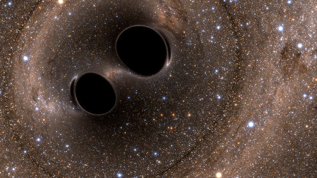

Gravitational Waves
 Gravitational waves (GWs) are tiny ripples in the fabric of spacetime that are produced by accelerating masses, typically binary systems of compact objects such as black holes, neutron stars, or white dwarfs. GWs are an important prediction of Einstein's General Relativity (GR) and were recently detected by the LIGO Collaboration. Detecting and characterizing GWs across a broad frequency range will allow us to more fully test GR and will open a new observational window into the universe.